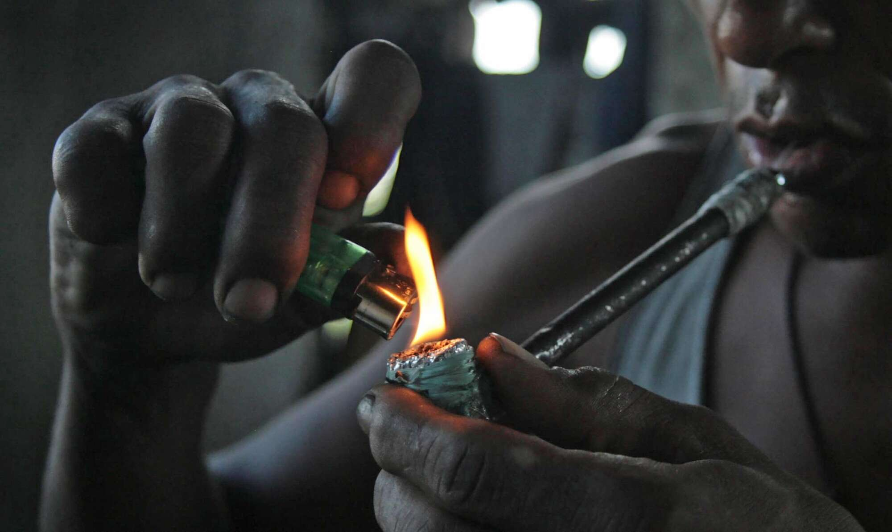

Crack
Riscos para a saúde:
- Dependência altamente viciante e destrutiva.
- Danos cerebrais irreversíveis, levando a problemas cognitivos e comportamentais.
- Impacto severo na saúde física, incluindo problemas respiratórios, cardíacos e renais.

Como se libertar do vício?
Algumas dicas e estratégias:
- Um médico ou especialista em adições pode ajudar a desenvolver um plano de tratamento, que pode incluir terapia e medicamentos.
- A terapia cognitivo-comportamental pode ajudar a entender e mudar comportamentos associados ao uso de drogas. Conselhos e suporte psicológico também são importantes.
- Grupos como Narcóticos Anônimos (NA) oferecem suporte e partilha de experiências com outras pessoas que estão passando pelo mesmo processo.
- Mantenha-se longe de ambientes e pessoas que possam desencadear o desejo de usar crack. Cercar-se de amigos e familiares que apoiem a recuperação pode ser crucial.
- Defina metas de curto e longo prazo e encontre atividades alternativas e produtivas que ajudem a ocupar seu tempo e mente.
- Manter uma dieta equilibrada, praticar exercícios e dormir bem são fundamentais para o processo de recuperação.